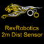

CT Rev 2M Sensor

What is it?
Rev Robotics 2M "Time of Flight" Distance Sensor (REV-31-1505).
Properties
- Port
- The distance sensor can be connected to the I2C bus connector on either the RoboRio or the MXP board. The choices are Port.kMXP or Port.kOnboard.
Additional Libraries
- You must install additional libraries before you can use the distance sensor class.
Instructions for installing the libraries can be found here:
RevRobotics GitHub ReadMe file
Note: One step in the instructions directs you to "merge" the maven folder in the downloaded zip file with the maven directory on your computer. That's not quite accurate. In the zip file, there was a maven/release/com/revrobotics folder. You only need to copy the revrobotics folder from the zip file to your PC's maven/com folder.
The "vendordeps" and "maven" instruction steps will only be needed once on your PC.
However each time you create a new project, you'll need to follow the portion of the instructions listed below:
- Press Ctrl-Shift-P to open the WPI commands window.
- Select WPILib: Manage Vendor Libraries
- Select Install new libraries (offline)
- Select the check box next to REV2mDistanceSensor and press OK
Also, we noticed that after installing the libraries and successfully compiling the code which imported the revrobotics libraries, VSCode still showed the red squiggly lines under the imports as if they were not found. Strange since the code builds and runs successfully. To get rid of this condition, we had to run the "Java:Clean the Java language server workspace" from the VSCode Command Palette.
- Other Considerations
/* Before measurements can be read from the sensor, setAutomaticMode(true) must be called. This starts a background thread which will periodically poll all enabled sensors and store their measured range. This should only be called once in an init method. */
distanceSensor.setAutomaticMode(true);
/* Call Something like this from the periodic method */
if (distanceSensor.isRangeValid()) {
SmartDashboard.putNumber("Range MXP", distanceSensor.getRange());
SmartDashboard.putNumber("Timestamp MXP", distanceSensor.getTimestamp());
}
See Also